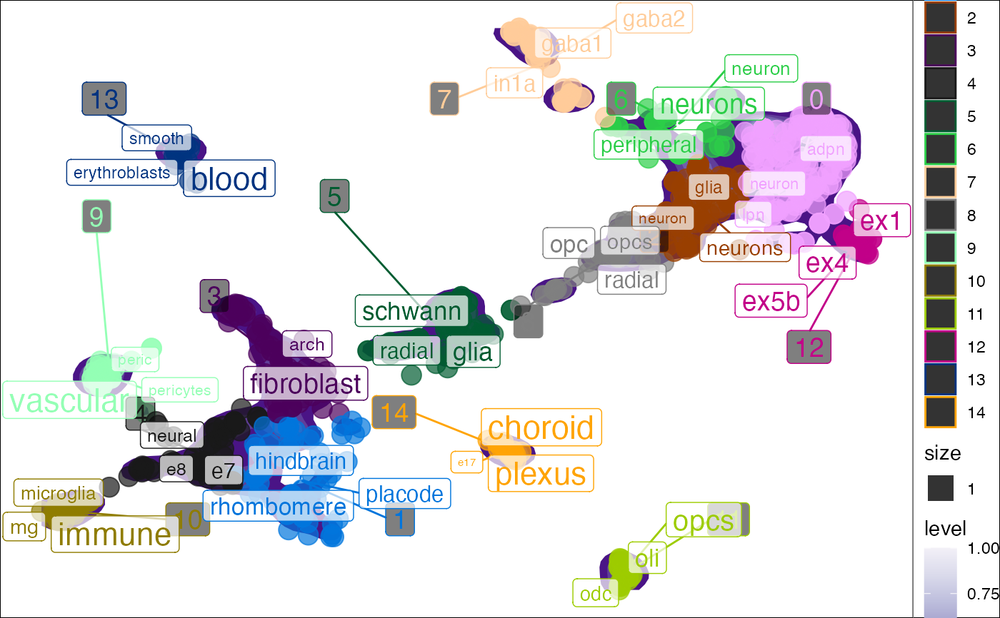

Plot tf-idf enrichment results in reduced dimensional space (e.g. PCA/tSNe/UMAP), Reduced dimensions can be computed based on single-cell data (e.g. RNA expression). .
plot_tfidf( object = NULL, reduction = "UMAP", label_var = "label", cluster_var = "seurat_clusters", replace_regex = "[.]|[_]|[-]", terms_per_cluster = 3, size_var = 1, color_var = "cluster", point_alpha = 0.7, point_palette = c(unname(pals::alphabet()), rev(unname(pals::alphabet2()))), density_palette = "Purples", density_adjust = 0.2, label_fill = alpha(c("white"), 0.7), show_plot = T, background_color = "white", text_color = "black", interact = F, verbose = T, ... )
| object | Single-cell data object. Can be in |
|---|---|
| reduction | Name of the reduction to use (case insensitive). |
| label_var | Which cell metadata column to input to tf-idf enrichment analysis. |
| cluster_var | Which cell metadata column to use to identify which cluster each cell is assigned to. |
| replace_regex | Characters by which to split |
| terms_per_cluster | The number of top significantly enriched terms to include per cluster. |
| size_var | Point size variable in |
| color_var | Point color variable in |
| point_alpha | Point opacity. |
| point_palette | Point palette. |
| density_palette | Density palette. |
| density_adjust | Density adjust (controls granularity of density plot). |
| label_fill | Cluster label background color. |
| show_plot | Whether to print the plot. |
| background_color | Plot background color. |
| text_color | Cluster label text color. |
| interact | Whether to make the plot interactive with plotly. |
| verbose | Whether to print messages. |
| ... | Additional arguments to be passed to |
#> Warning: data set ‘scNLP’ not founddata("pseudo_seurat") res <- plot_tfidf(object = pseudo_seurat, label_var = "celltype", cluster_var = "cluster", show_plot = T)#>#> [1] "+ Extracting data from Seurat object." #> [1] "+ Using reduction: umap"#>#>#>#> Warning: Ignoring unknown aesthetics: label